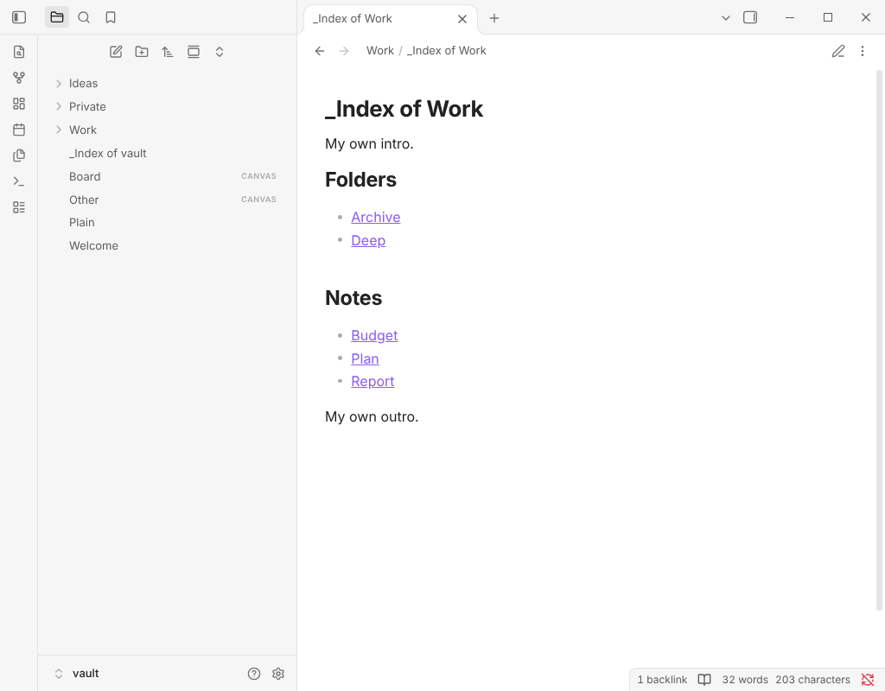

Free Obsidian plugin
Folder Index Notes
Keeps an index note in each folder up to date with links to the notes and subfolders inside it.
Install from the Obsidian directory Open in Obsidian Source code and issues

What it does
Keeps an index note in each folder up to date with links to the notes and subfolders inside it.
Highlights
- Only touches its own block. The list lives between two comment markers; anything you write above or below stays.
- Stays current by itself. Add, rename, move or delete a note and the index of that folder (and the one it left) updates a moment later.
- Nothing is created behind your back. One command creates indexes in every folder once, after showing how many folders it will touch; automatic creation is a setting that starts off.
- Real links. Links are made by Obsidian, so your link format setting applies, and renamed notes keep working.
- Sensible order. Natural sorting, so Note 2 comes before Note 10.
Details
- Version
- 0.1.0
- Needs Obsidian
- 1.5.7 or newer
- Platforms
- Desktop and mobile
- Author
- Siulved54
- Price
- Free and open source